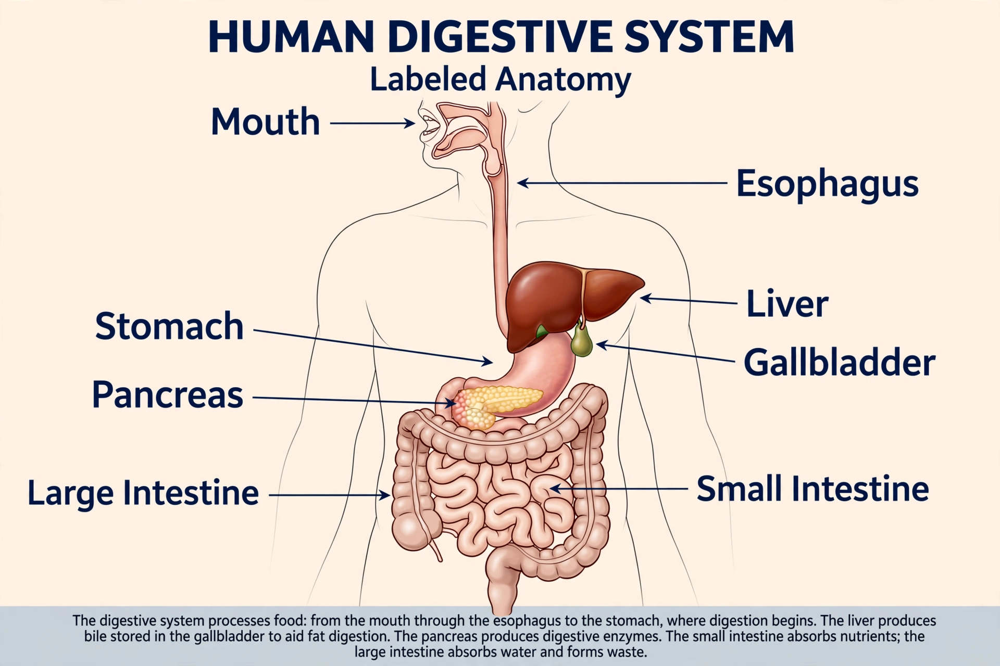

| Digestive system | |
|---|---|
| System | Gastrointestinal |
| Organs | Mouth, pharynx, oesophagus, stomach, small intestine, large intestine, rectum, anus; liver, gallbladder, pancreas, salivary glands |
| Function | Ingestion, digestion, absorption, defecation |
| Latin | systema digestorium |

The human digestive system consists of the gastrointestinal tract plus the accessory organs of digestion (the tongue, salivary glands, pancreas, liver, and gallbladder). Digestion involves the breakdown of food into smaller and smaller components, until they can be absorbed and assimilated into the body. The process of digestion has three stages: the cephalic phase, the gastric phase, and the intestinal phase.
The first stage, the cephalic phase of digestion, begins with secretions from gastric glands in response to the sight and smell of food. This stage includes the mechanical breakdown of food by chewing, and the chemical breakdown by digestive enzymes that take place in the mouth. Saliva contains the digestive enzymes amylase and lingual lipase, secreted by the salivary and serous glands on the tongue.
The gastrointestinal tract is an organ system within humans and other animals which takes in food, digests it to extract and absorb energy and nutrients, and expels the remaining waste as feces. The mouth, esophagus, stomach and intestines are all part of the gastrointestinal tract. The tract itself is divided into upper and lower parts: the upper gastrointestinal tract consists of the mouth, pharynx, esophagus, stomach, and duodenum, while the lower tract includes most of the small intestine and all of the large intestine.
There are several organs and other components involved in the digestion of food. The organs known as the accessory digestive glands are the liver, gallbladder and pancreas. Other components include the mouth, salivary glands, tongue, teeth and epiglottis. The largest structure of the digestive system is the gastrointestinal tract (GI tract). This starts at the mouth and ends at the anus, covering a distance of about nine metres in an adult.
Many diseases and disorders can affect the digestive system, including infections, inflammation such as gastritis and inflammatory bowel disease, ulceration, and cancers such as colorectal cancer. Gastroenterology is the branch of medicine concerned with the digestive system and its disorders.
See also: Stomach · Liver · Pancreas · Small intestine